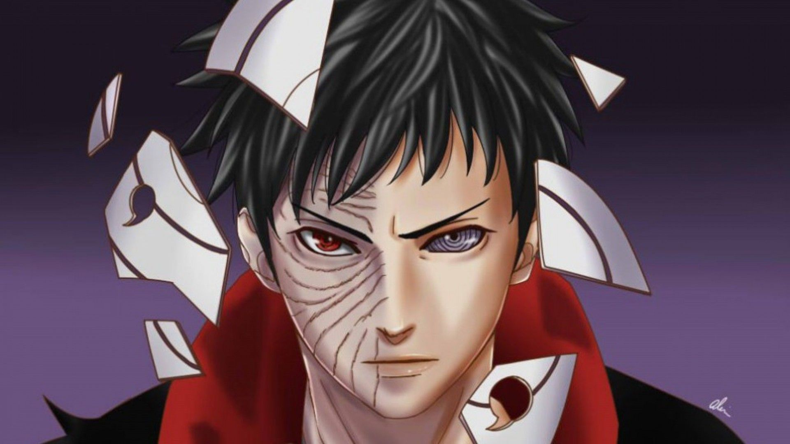
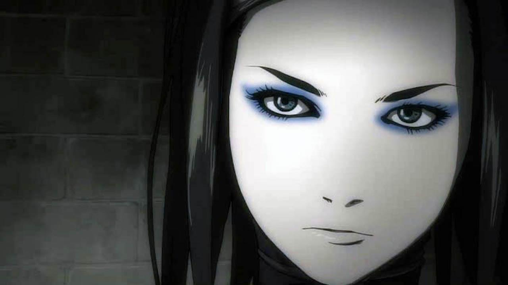
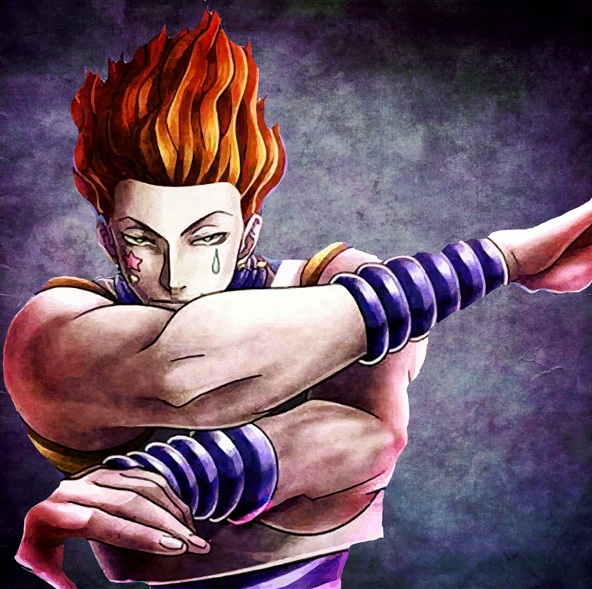

Clean & Beautiful Website




The word is the abbreviated pronunciation of "animation" in Japanese, where this term references all animation Outside Japan, anime is used to refer specifically to animation from Japan or as a Japanese-disseminated animation style often characterized by colorful graphics, vibrant characters and fantastical themes. The official website for previously announced Konbini Kareshi TV anime has been updated with the cast members. In addition to the 12 cast members that will reprise their roles from the drama CDs, three more voice actors will join the cast. The TV anime is slated for Summer 2017 .
Anime differs greatly from other forms of animation by its diverse art styles, methods of animation, its production, and its process.
Anime has to be licensed by companies in other countries in order to be legally released. While anime has been licensed by its Japanese owners for use outside Japan
The practice became well-established in the United States in the late 1970s to early 1980s, when such TV series as Gatchaman and Captain Harlock
The opening and credits sequences of most anime television episodes are accompanied by Japanese pop or rock songs, often by reputed bands.
Anime and manga artists often draw from a common canon of iconic facial expression illustrations to denote particular moods and thoughts